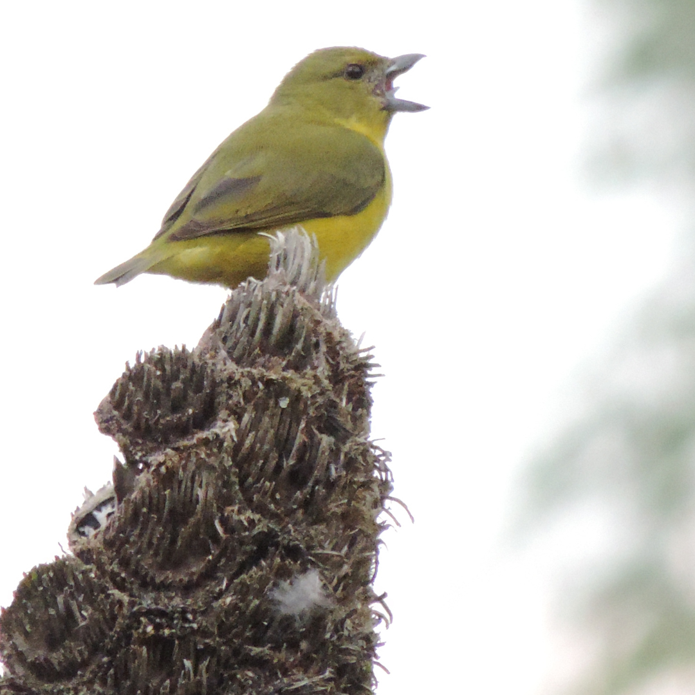

Photo Gallery
Welcome to my photo gallery. Here you'll find a collection of moments captured through my lens.
I capture what I found beautiful.

Águila Caminera
Barranquillo at the Sunset
Barranquillo at the Sunset
Barranquillo at the Sunset

Gritón
Cold Noon at Manizales
Sunset in Manizales
Sunset in Manizales